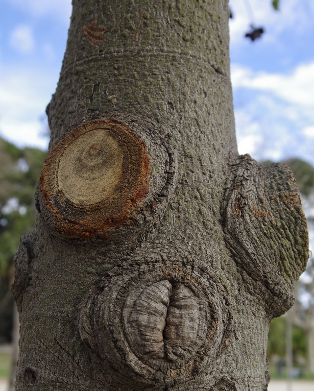
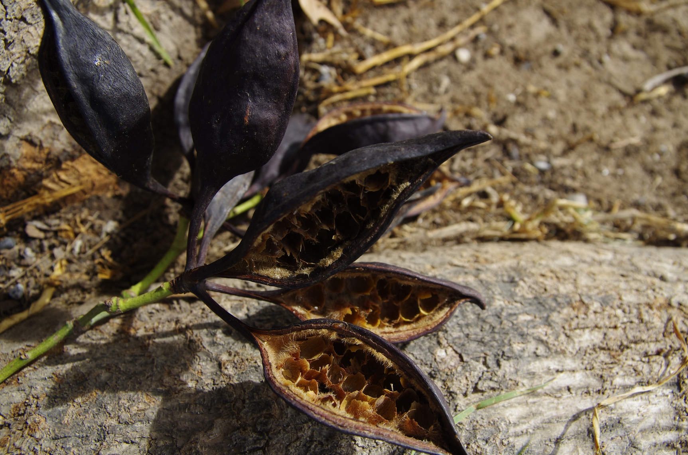
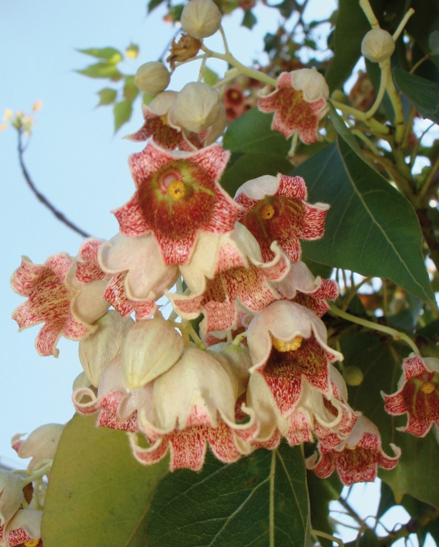

Brachychiton populneus R. BR. (Braquiquito)
¿Sabías que el Brachychiton puede presentar un tronco de color verdoso? Esto es así porque se recubre de clorofila (el pigmento que capta la luz en las plantas para realizar la fotosíntesis), para poder captar la luz. Es oriundo de Australia y hasta ambientes donde convive con otras plantas muy altas que le pueden robar la luz.

En el caso del Brachychiton populneus, el tronco suele ser de color gris o gris verdoso (aquí no tiene esos vecinos competitivos que le puedan robar luz). Es muy recto, cilíndrico y alto, para alcanzar las zonas altas donde hay más luz.
También suele engrosar la base del tronco para almacenar agua en la época de sequía y suele disponer sus hojas (las cuales varían mucho según la especie) de forma perpendicular a los rayos solares.
Si tienes la suerte de ver un Braquiquito joven a diario podrás observar como el lado de su tronco, o de sus ramas, de cara al sol, van adquiriendo un color verdoso (no cambia de color, sino que se recubre de clorofila, la cual vemos verde, para captar toda la luz posible de nuevo).
Como puedes comprobar, muchas de las características del Braquiquito consisten en captar la mayor cantidad de luz posible ya que en los ambientes tropicales la luz es el factor limitante en los niveles más bajos.
Si ves colgando de sus ramas, o a sus pies en el suelo, un fruto abierto y relleno de pequeñas semillas amarillas o negruzcas, ve con cuidado pues los pelos que se encuentran dentro suelen ser urticantes (causan picor).
Dada su belleza y la buena sombra que puede llegar a dar, es un árbol muy estimado en parques y por ello se suele cruzar con otras especies de Braquiquito para obtener así híbridos ornamentales.
Para acabar, decimos que también es un árbol común porque el B. populneus es la especie más diseminada de todo el género Brachychiton, tanto por Ámerica del Norte y España.
Ficha técnica:
Familia: Sterculioideae
Origen: Australia
Altura: 8-12 metros
Época de floración: marzo-abril-mayo
Otros datos: En verano no necesita riego
¿Por qué crees que el Braquiquito abre el fruto cuando está maduro? Si quieres comprobar cúanto sabes del Braquiquito selecciona a continuación tu nivel educativo
Brachychiton populneus R. BR. (Brachychiton or Kurrajong)
Did you know that the Kurrajong may have a greenish trunk? This is because it is covered in chlorophyll (a pigment that captures light in plants to make photosynthesis happen) in order to be able to capture as much light as possible.
It is native to Australia and there it shares its space with very tall plants that might steal their light.
In the case of the Brachychiton populneus, the trunk is usually grey or greenish grey -here they don’t have those competitive neighbours that get the light. It is very straight, cylindrical and high, to try and reach the levels with most light.
It also thickens the base of the trunk to store water during dry spells, and it tends to arrange its leaves, which differ from species to species, vertically from the sunrays.
If you are lucky enough to watch a young Brachychiton daily, you will be able to notice how the side of the trunk or the branches facing the sun take on a greenish shade –it doesn’t change colour, it covers in chlorophyll, which we perceive as green, in order to get as much light as possible.
As you can see, many of the features of this tree are aimed at capturing as much light as possible, because light is the limiting factor in the lower levels of tropical vegetation.
If you see hanging -or right next to it on the floor- an open fruit filled with small yellow and blackish seeds, be careful because the hairs inside are usually urticating (stinging).
Thanks to its beauty and good shade, this is a well-loved tree in parks. For this reason, it is normally cross-bred with other Brachychiton species to get ornamental hybrids.
Finally, this is also a common tree because B. populneus is the most spread species of the Brachychiton genus, both in North America and Spain.
Fact Sheet:
Family: Sterculioideae
Origin: Australia
Height: 8-12 metres
Flowering: March-April-May
Other info: Does not need watering in summer.
Brachychiton populneus R. BR. (Braquiquíton)
Sabies que el braquiquíton pot presentar un tronc verdós? Açò passa perquè es recobreix amb clorofil•la (el pigment que capta la llum en les plantes per realitzar la fotosíntesi), per poder captar més llum. És originari d’Austràlia i allà necessita molta llum ja que ha de conviure amb plantes molt altes que li poden furtar la llum.
En el cas del Brachychiton populneus, el tronc sovint és gris o gris verdós: ací no te veïns competitius que li poden furtar la llum. És molt recte, cilíndric i alt, per arribar a zones altes on hi ha més llum.
A més a més, sovint engrosseix el tronc per emmagatzemar aigua durant l’època de sequera i disposa les fulles (que varien molt segons la espècie) de forma perpendicular a la llum solar.
Si tens la sort d’observar un Braquiquíton jove dia rere dia podràs veure com el costat del tronc i de les rames que estan cara al sol van adquirint un color verdós (no canvia de color, sinó que es recobreix de clorofil•la, la qual veiem de color verd per captar tota la llum possible, una vegada més).
Com pots comprovar, moltes de las característiques del Braquiquíton consisteixen en captar la major quantitat de llum possible perquè als ambients tropicals la llum és el factor limitant als nivells més baixos.
Si veus penjant de les seues rames o al seus peus un fruit obert i farcit de xicotetes llavors grogues o negres, vés en compte, perquè el pels que es troben a dins solen ser urticants (que produeixen picor).
Per la seua bellesa i la bona ombra que pot donar és un arbre molt estimat en parcs i, per aquest motiu, sovint és creua amb altres especies de Braquiquíton per obtenir així híbrids ornamentals.
Per acabar, diem que també es un arbre comú perquè el B. populneus es la espècie mes disseminada de tot el gènere Brachychiton, tant en Amèrica del Nord com a Espanya.
Fitxa tècnica:
Família: Sterculioideae
Origen: Austràlia
Alçada: 8-12 metres
Època de floració: Març-abril-maig
Altres dades: A l’estiu no cal regar-lo